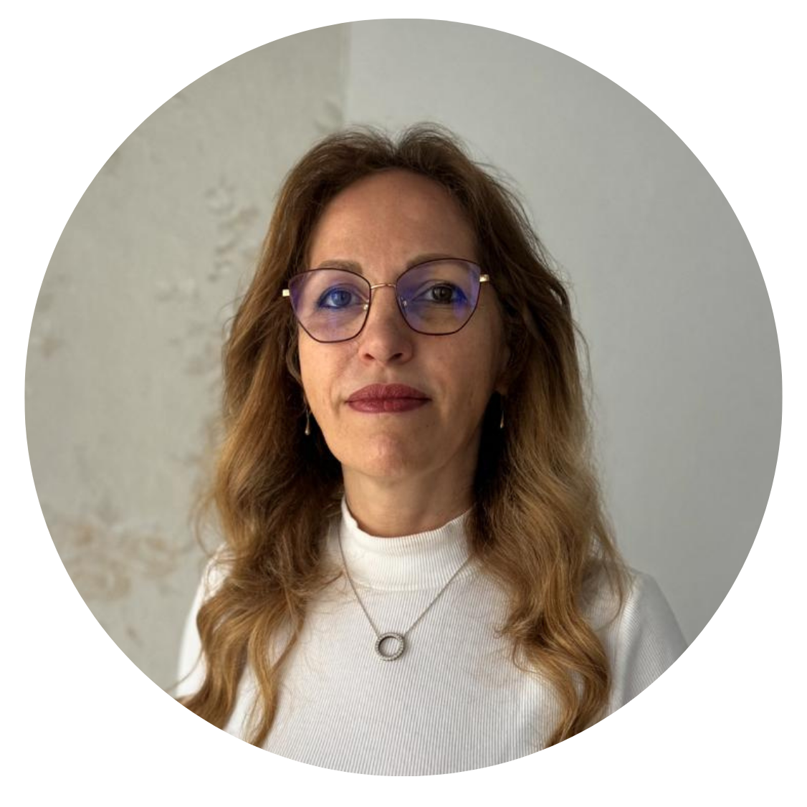
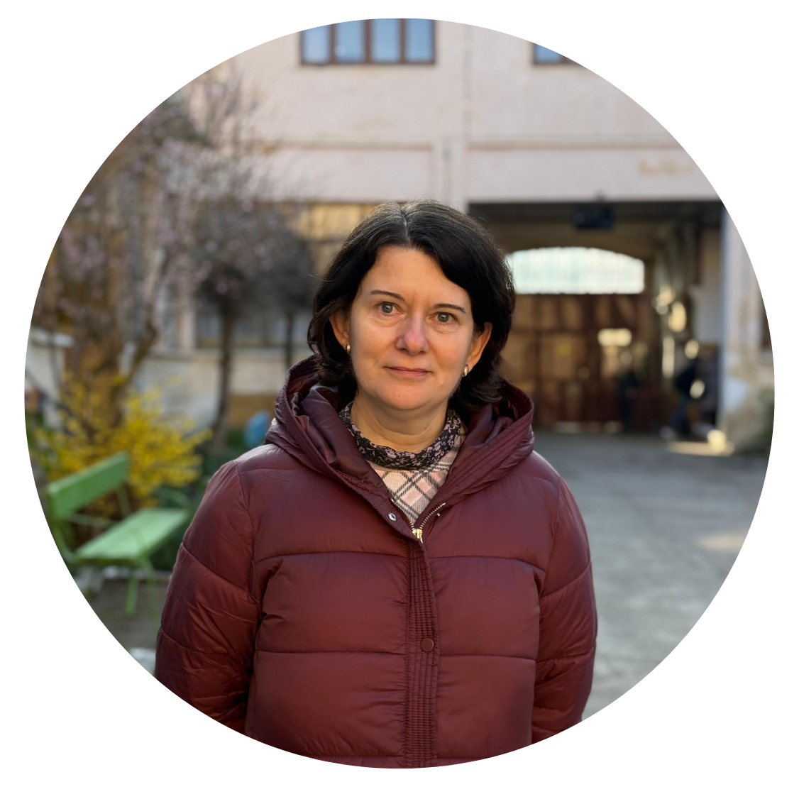
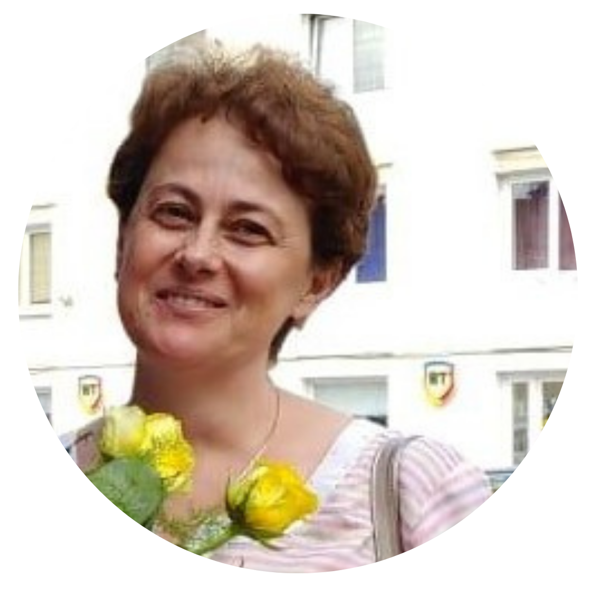

Echipa noastră
Profesori dedicați
disciplinei și elevilor
Catedra de Matematică susține progresul fiecărui elev: de la înțelegerea conceptelor de bază până la performanță la concursuri. Comunicăm așteptări clare și oferim suport pentru teme, recuperări și aprofundări.
Catedra de Matematică
Rus Sonia
Profesor de Matematică
Martaian Ioana
Profesor de Matematică
Lădar Rodica
Profesor de Matematică
Timbuș Oana
Profesor de MatematicăGherman Ioana
Profesor de Matematică